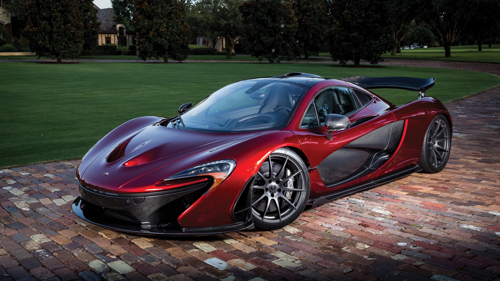

Depois do grande sucesso da McLaren F1, a companhia britânica precisava de um novo projeto ambicioso para voltar ao topo e, dessa necessidade, surgiu a McLaren P1 que, assim como sua antecessora, buscava ser o suprassumo dos supercarros de rua. Limitada a apenas 375 unidades, a P1 foi feita quase que inteiramente de fibra de carbono, incluindo sua gaiola central num design monocell, que torna o carro mais rígido e leve ao mesmo tempo. Além disso, dias foram gastos nos túneis de vento aperfeiçoando cada curva do carro para garantir um coeficiente de arrasto baixíssimo de 0,34. Com tecnologias vindo direto dos carros de Fórmula 1, a P1 acelerava de 0 a 100km/h em apenas 2,8 segundos e, entre o trio de hipercarros de 2013, possui o menor tempo confirmado em Nurburgring.